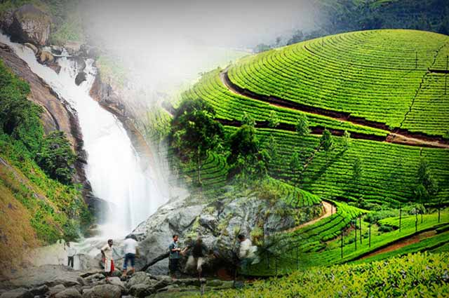
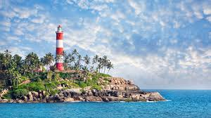

Often compared to Venice due to its abundance of canals, Alappuzha is the gateway to the backwaters
of Kerala. Rent a houseboat for an up-close view of the palm-lined waterways. In August, the
snake-boat race is a remarkable festival—each traditional boat has a crew of over 100 local sailors.

Munnar
Munnar, the famed hill station of south India, is a romantic locale where natural beauty is
everywhere to visit, explore and to enjoy. Munnar is situated at the confluence of three mountain
streams – Muthirapuzha, Nallathanni and Kundala – and the word ‘Munnar’ means three rivers in
Malayalam. Situated about 1600m above sea level, the hill station had been the summer resort of the
British Government during the colonial era. Imprints of the colonial past stand tall in the Munnar
town in the form of English country cottages. Virgin forests, savannah, rolling hills, scenic
valleys, numerous streams, huge splashy waterfalls, sprawling tea plantations and winding walkways
are all part of the great holiday experience on offer for a traveler to Munnar. Munnar is also known
for Neelakurinji, a rare plant which flowers only once in twelve years. The ‘kurinji season’ in
Munnar is a magnificent sight when the hills and valleys get bathed in the blue of the Neelakurinji
blooms.

Thiruvanathapuram
Thiruvananthapuram is a major tourist centre, known for the Padmanabhaswamy Temple, the beaches of
Kovalam and Varkala, the backwaters of Poovar and Anchuthengu and its Western Ghats tracts of
Ponmudi and the Agastya Mala.
kochi
Besides its rich culture and traditions, Kochi is famous for its Ayurveda, spices, wildlife, hill
stations, rivers, house boats and not to forget the Chinese Fishing Nets, a hallmark of kichi, makes
this interesting city one of the most attractive destinations in the world.
Kerala Map & About Kerala
About Kerala
Kerala is situated at the southwestern end of the Indian subcontinent. Kerala has a long history of
art and cultural heritage and foreign trade with other countries. The state with the highest
literacy rate in India is noted for its achievements in education, health, gender equality, social
justice, law and order. In addition to these, the state has the lowest infant mortality rate in the
country.
Kerala lies between the Arabian Sea in the West and the Western Ghats (Sahyadris) in the East with
an area of 38863 sq km. It is one of the five states in the linguistic-cultural area known as South
India. The neighbouring states of Kerala are Tamil Nadu and Karnataka. Mayyazhi (Mahe / Mahe) is a
part of Pondicherry (Puducherry) and lies within Kerala. Though the Lakshadweep in the Arabian Sea
is part of the Union Territories, it has a close alliance with the linguistic and cultural heritage
of Kerala.